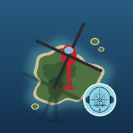

San Francisco Bay, live
A tour of Ted's Birdseye: ships, planes and trains, right now
1 min 44 s, narrated. Recorded on November 2, 2026, from the live feeds as they were that afternoon.
What you're seeing
- Ships from their own AIS broadcasts, as every vessel of any size sends them.
- Aircraft from ADS-B, the air's version of AIS: each airliner's position, height and speed, about once a second. Each flies at its real height, with a thin line down to the ground.
- Trains (Caltrain, SMART and ACE) from the railroads, through 511.org. They report every minute and a half or so, and between reports each train runs on at its last speed.
Try it yourself
Open Ted's Birdseye, choose SF Bay, and tap 📡 Live. Tap any plane or train for its card, then ride along: the cockpit or the cab, a drone, behind, beside or ahead. ⛴ Underway lists them all, and ✨ Find makes them flash.
Open Ted's Birdseye